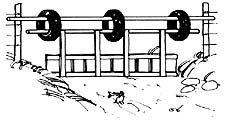
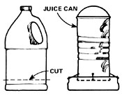
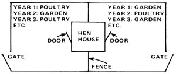
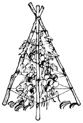

Most gardeners know that a sprinkling of blood meal in and around the garden will ward off hungry rabbits. Unfortunately, though, blood meal is awfully expensive . . . even if you use only a little bit at a time. Mrs. T.C. Wallin of Loves Park, Illinois offers this welcome suggestion: "Soak a piece of raw liver in a bucket of hot water for several hours, then drizzle the resulting 'liver tea' around your garden and in between plants. You'll not only be improving your soil, you'll be protecting your vegetables from nibbling bunnies . . . at a fraction of the cost of blood meal!"
If you've ever stashed a hay rake, sickle, garden hose, bushel basket, brooder lamp, or other piece of seasonal farm gear away for safe-keeping-only to spend half a day searching for the (suddenly) misplaced item the next time it was needed-you'll want to heed the following two suggestions submitted by Betty Parsons of Ardmore, Pennsylvania: [1] The next time you're "redding out" the barn loft, toolshed, attic, etc., make a small map of the storage area showing what items you put where . . . then tack the reminder on the wall, or clip it to the feed store calendar. [2] Attach labels describing the above-stored item(s) to the bridging between the rafters of your loft or attic.
Here's an ingenious-and effortless-way to improve your pasture: Simply mix one tablespoon of untreated, unhulled grass seed into each cow's daily rations during the spring and summer months. The undigested seed will be planted at random in the animal's droppings, complete with "natural fertilizer" to start it off right. Doug Bliss of Shawnee, Oklahoma-who sent us this bit of lore-says you'll soon have the best pasture around if you follow the above advice. "Especially," he adds, "if you'll use Bermuda grass seed. "
Building a fence across a creek can be tricky, especially if the water level varies a great deal from season to season. The next time you're faced with this chore, you might want to try the novel "swinging creek fence" idea sent in by Jerry Whittamore of Kingsport, Tennessee. Jerry's swinging barrier has three virtues: [1] It's made entirely of low- and no-cost materials (poles, scrap wood, and old tires). [2] It won't get clogged up with debris-or wash away-when the water level rises. And [3] it keeps the cows out of the neighbor's corn patch.
The next time you accidentally spill coffee on a light-colored rug . . . go ahead and splash beer on the soiled area too! Dierdre McAuliffe of Alberta, Canada claims that her family found coffee stains impossible to remove from their carpet until-by a happy coincidence-someone spilled beer on a coffee-stained portion of the rug. "Just rub some suds lightly into the carpet's nap," says Dierdre, "and the spot should come clean. If it doesn't, repeat the procedure:"
If crows are pulling up your corn sprouts, take this bit of advice from Neil Hoffman of Booneville, Kentucky: Stretch strings across the corn patch at head height. The birds-suspecting a trap, perhaps-will avoid going underneath the crisscrossed twine.
Baby chicks-as you know-can waste a lot of feed by scratching and stomping around in their grain trough. You can save on mash, however, by giving the biddies a scaled-down version of the hanging feeder used for older birds. David Green of Hudson, Quebec, Canada tells how: "First cut away-and discard-all but the bottom two inches of a large plastic jug, punch four equally spaced holes around the rim of the thus-made `bowl', and insert an eyelet through each hole. Next, remove the ends from a 48-ounce juice can and bore four holes at equal intervals in the sides of the container, near the bottom. Wire this feed hopper/can to the plastic saucer/feeder, punch a couple of holes in the top of the former juice container, and attach a handle to the rig. That's it!"
All that remains is to teach your little peeps how to use their new cafeteria. David Green suggests you place the feeder right on the floor, with its edge under the brooder lamp . . . then-when the chicks begin to eat from it-suspend the unit just above the ground. In a week, move the chow-server farther from the brooder and raise it another inch or so. Continue to suspend the device higher and higher as the birds get bigger until-finally-the pullets and cockerels graduate to the use of an adult-sized hanging feeder.
Stuck with six right-handed (or left-handed) work gloves? "Convert them into three usable pairs," says Bob Maginnis of Beaverton, Oregon. "Just turn three of the gloves inside out, using a pair of needle-nose pliers-if you have to-to reverse the fingers."
Finding a place to store bulky winter bedding for the summer can be a real headache if-like many homesteaders (and apartment dwellers)-you're short on shelf and closet space. Before you start to walk around in circles with your arms full of blankets, though, listen to what Lois Whitacre of Perrysburg, Ohio does with her out-of-season bed linens: "I fold my heavy comforters and quilts neatly and lay them between the mattress and box springs of the bed on which they were used. Next fall, when the night air becomes chilly again, there are my blankets: dust-free, wrinkle-free, and close at hand!"
Lois, who says she learned this trick from an elderly Amish woman, suggests that after you stow your covers away you jot a little note on the September page of your calendar, since "out of sight" has a way of becoming "out of mind" even in a log cabin or small apartment.
The following recipe for homemade salve-sent in by Norene Hubbard of Pala, California-has been passed down in Norene's family for five generations. The ointment may be used to treat minor burns, cuts, irritations, rashes, and other skin problems.
4 pounds of kidney suet
6 ounces of sweet oil
1/2 pound of beeswax
1/2 pound of rosin
6 ounces of spirits of turpentine (NOT paint thinner)
Heat the suet gently until it liquefies, then strain the liquid through cheesecloth. Add the sweet oil, beeswax, and rosin to the melted grease in a large pot and stir over low heat until all ingredients are dissolved. Remove the mixture from the stove, allow it to cool, then add the spirits of turpentine. Pack the cool salve into jars or tins and seal.
According to Joni Haug and Mark Brown of Mormon Lake, Arizona, the rough, unglazed surface on the bottom of a heavy porcelain bowl (or other piece of crockery) makes an excellent substitute for an expensive, high-quality sharpening stone.
What do you do when faced with the task of shelling four bushels of peas? If you're Richard Crum of Jeffersonville, Indiana, you get out the old wringer washer! "One of these washers will do a fine job of removing the pods from both garden peas and butter beans if you tape a sheet of plastic to the wringer's drain board so that your edibles won't get lost under the bottom roller," Richard writes. "You'll find you can feed whole pods into the rollers by the handful, and the peas-almost entirely undamaged-will come out on your side, while the hulls fall out on the opposite side."
Get more mileage out of those empty eggshells! Augie O'Connor of Capitola, California claims that you can make a potent liquid fertilizer from your spent "cackleberry hulls" if you'll [1] soak the unrinsed shells from at least six eggs in a quart jar filled with water, and [2] let the infusion ripen for a week or so in a shaded place, shaking it from time to time. "Sniff the solution at the end of seven days," Augie advises. "If it knocks you out, it's ready!"
When your plants need a boost, simply uncap the jar and pour a little "eggshell tea" on the soil around them. Use the solution sparingly, and-please- outdoors only (unless you want your family to move away and take up residence in a barn).
If you haven't yet planned your garden and poultry areas, why not try the rotation system devised by Jayme Doyle of Hillsboro, Oregon? Just choose a suitable spot for your garden and fence in twice as much growing area as you need for the crops. Put a gate at each end of the rectangular plot, build your henhouse smack in the center of the compound, and divide the area right down the middle with more fencing.
"The first year," says Jayme, "plant vegetables on one-half of the patch, and let your chickens have the run of the other side. At the end of the gardening season, open the entire space up to the birds . . . then-the following year-confine the clucks to the former vegetable patch and plant your crops in last year's poultry yard. Keep rotating the hen run and garden areas each year and you'll find that the birds give you a great deal of help with soil improvement and insect control."
Few things are as frustrating as trying to stake tomato plants in an area of hard or rocky soil. Sam Eisman of Greenfield Park, New York offers the following suggestion: "Make a tipi! We gather three to four branches-each 6' to 8' long and 1" or 2" in diameter-for this purpose, tie them together at the top with twine and stand them up like a tripod over our young tomato plants. We then spiral recycled baler twine around and around the `tipi' all the way up to the top. The result is a secure, stable, aboveground structure that supports our rambling vines for the rest of the season."
Not again! Yep . . . you forgot to soak your dried beans overnight, and it's almost supper time. "Don't fret," says Sandra Wilson of Oliver Springs, Tennessee. "You can still serve baked beans for supper. Just boil the dry legumes in water for five minutes, remove the pan from heat, and let the contents soak for an hour . . . then cook the beans as you normally would."
Enlightenment from Mrs. Lynn Wilson of Saratoga, California: A regular taper candle will fit into almost any candlestick . . . if you dip its butt end in hot water first to soften it.
|
 |
 |
 |
|
 |
|
|